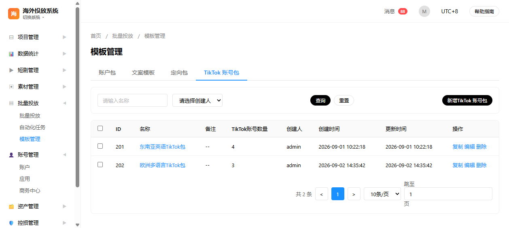
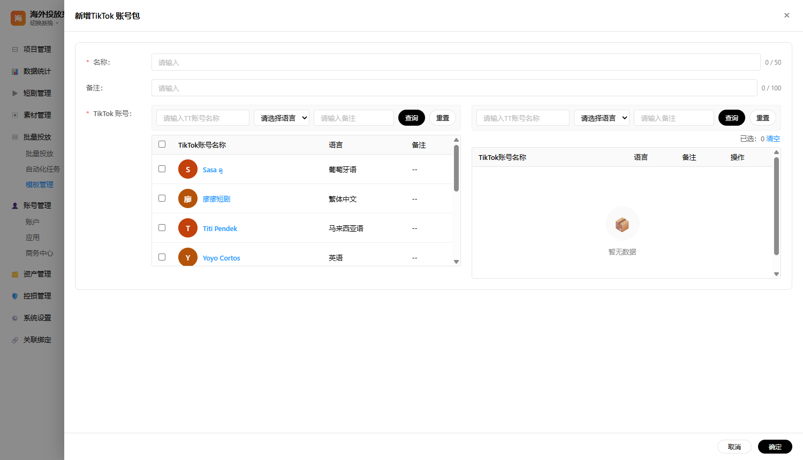
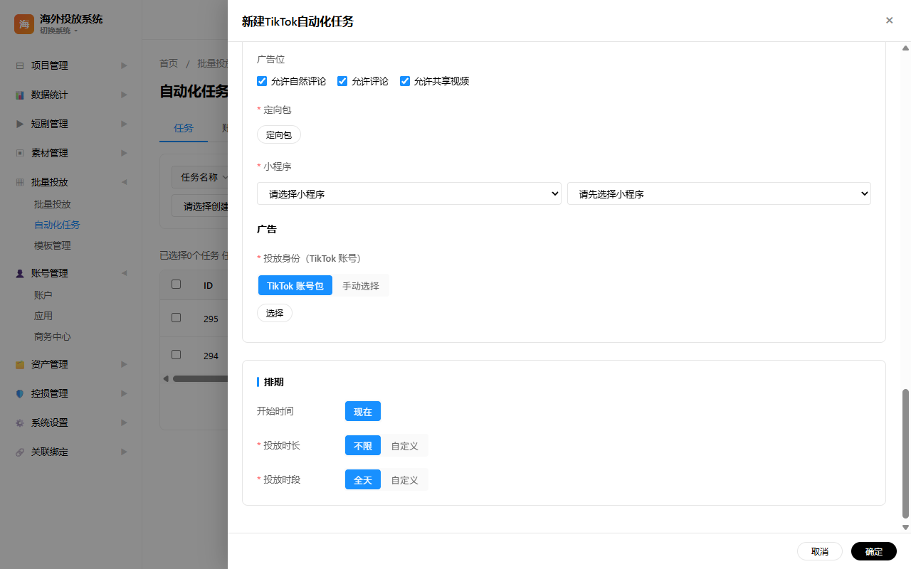
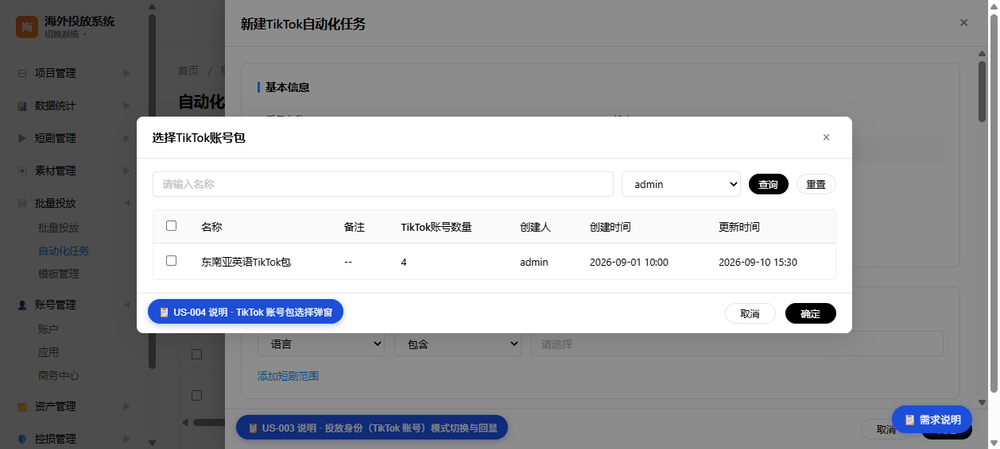
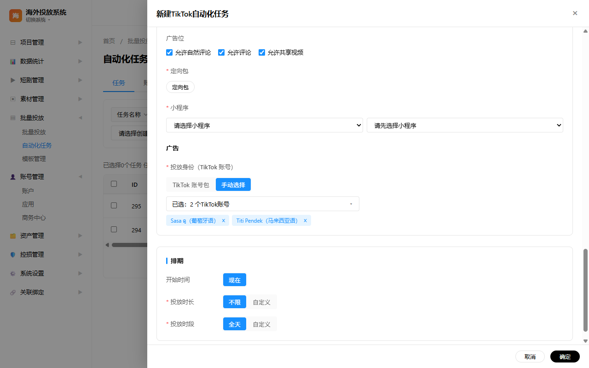

原型来源：
pages/overseas-template.html（模板管理 - TikTok 账号包）、pages/overseas-auto-delivery.html（自动化任务 - 投放身份）
文档版本：v1.1
生成日期：2026-09-04
文档格式：HTML（浏览器查看）
海外投放系统面向短剧出海投放场景，基于 TikTok Business API 管理广告投放基础设施。模板管理模块沉淀常用投放配置，其中 TikTok 账号包用于将多个 TikTok 账号组合为模板，供自动化任务快速引用；自动化任务模块支持按规则自动创建广告，投放身份（TikTok 账号）决定广告以哪些 TikTok 账号进行投放。系统提供「TikTok 账号包」与「手动选择」两种投放身份选择方式，并需兼容历史任务数据的回显。
本文档定义批量投放模块中 TikTok 账号包与自动化任务投放身份的功能需求、交互逻辑、数据筛选、表格字段、数据权限与接口依赖，作为原型评审、研发排期与测试验收的依据。文档覆盖 5 个核心用户故事，明确每个表格的字段说明、数据来源与数据流转路径。
pages/overseas-template.html、pages/overseas-auto-delivery.htmlstyles/main.css、styles/prd.css、scripts/prd.js| 角色 | 说明 | 使用场景 |
|---|---|---|
| 投放运营 | 创建并维护 TikTok 账号包，供自动化任务引用 | 新增、编辑、复制、删除自己创建的账号包；按组织架构查看数据 |
| 投放组长 | 管理组员创建的账号包 | 查看组员数据，点击名称查看详情 |
| 管理员/全部数据权限用户 | 系统级数据查看与维护 | 查看全部 TikTok 账号包数据 |
| 投放运营 | 配置自动化任务的投放身份 | 选择 TikTok 账号包或手动选择具体账号 |
| 投放管理员 | 审核与调整任务配置 | 查看历史任务投放身份回显 |
进入模板管理 - TikTok 账号包 Tab
├─→ 输入名称/选择创建人 → 点击「查询」过滤列表
├─→ 点击「新增TikTok 账号包」→ 打开新增抽屉
├─→ 点击某行「名称」→ 打开编辑抽屉查看详情
├─→ 点击某行「复制」→ 打开复制抽屉（名称前自动拼接「复制-」）
├─→ 点击某行「编辑」→ 打开编辑抽屉
└─→ 点击某行「删除」→ 二次确认后删除（仅自己创建的数据可操作）
打开新建/编辑自动化任务抽屉
└─→ 定位到「投放身份（TikTok 账号）」字段
├─→ 方式一：TikTok 账号包
│ ├─→ 点击「选择TT账号包」打开弹窗
│ ├─→ 勾选/取消勾选账号包（支持空选）
│ └─→ 点击「确定」保存并展示已选账号包标签
└─→ 方式二：手动选择
├─→ 点击触发按钮展开下拉多选
├─→ 勾选/取消勾选账号
├─→ 点击一键清除按钮清空全部已选
└─→ 点击外部区域或按 Esc 收起下拉
| 功能点 ID | 功能名称 | 所属页面/组件 | 优先级 | 说明 |
|---|---|---|---|---|
| F-001 | TikTok 账号包列表查询 | TikTok 账号包主页面 | P0 | 按名称、创建人筛选 + 查询/重置，点击查询后执行 |
| F-002 | TikTok 账号包主表展示 | TikTok 账号包主页面 | P0 | 展示 ID/名称/备注/账号数量/创建人/创建时间/更新时间/操作 |
| F-003 | 新增/编辑/复制 TikTok 账号包 | TikTok 账号包抽屉 | P0 | 通过左右穿梭框维护账号包内的账号；复制时名称前自动拼接「复制-」 |
| F-004 | 投放身份模式切换 | 自动化任务抽屉 | P0 | 支持「TikTok 账号包」/「手动选择」两种模式切换与回显 |
| F-005 | TikTok 账号包选择弹窗 | 自动化任务抽屉 | P0 | 多选账号包，未选择时也可点击确定保存 |
| F-006 | 手动选择 TikTok 账号 | 自动化任务抽屉 | P0 | 下拉多选，支持搜索与一键清除 |
故事描述：作为投放运营，我想要查看并按名称/创建人搜索 TikTok 账号包列表，以便快速定位目标账号包并在自动化任务中引用。数据权限按组织架构控制：组长可查看组员数据，组员仅可查看自己的数据；拥有「全部数据」权限的用户可查看全部数据。
筛选项（组件类型）
表格字段
数据来源
数据流转
页面加载 → 调用「获取 TikTok 账号包列表」→ 渲染主表；用户在筛选栏输入名称或选择创建人后点击「查询」执行过滤；点击「重置」恢复全量；点击「新增TikTok 账号包」打开新增抽屉；点击名称链接打开编辑抽屉查看详情。
界面示意

验收标准
故事描述：作为投放运营，我想要新建、编辑或复制 TikTok 账号包，以便将常用账号组合沉淀为模板，供自动化任务快速引用。
筛选项（组件类型）
表单与穿梭框字段
数据来源
数据流转
点击「新增/编辑/复制」→ 打开右侧宽抽屉（标题分别为「新增TikTok 账号包」「编辑TikTok 账号包」「复制TikTok 账号包」）→ 编辑时回显原名称、备注与已选账号，复制时名称前自动拼接「复制-」并回显原备注与已选账号 → 用户在左侧筛选并勾选账号 → 勾选账号自动移入右侧已选区 → 在右侧点击「删除」后，左侧对应账号自动取消勾选 → 点击「确定」保存账号包并关闭抽屉。
界面示意

验收标准
故事描述：作为投放运营，我想要在创建/编辑自动化任务时选择投放身份方式，并正确回显历史任务的投放身份数据。历史任务中已保存的投放身份统一按「手动选择」模式处理，并正常回显用户已选选项。
交互控件
数据来源
数据流转
新建任务默认选中「TikTok 账号包」模式；用户点击分段项切换模式；选择账号包模式时点击「选择TT账号包」打开弹窗多选；手动选择模式时点击下拉勾选账号，点击一键清除按钮可清空全部已选项；编辑/复制历史任务时，历史投放身份数据统一按「手动选择」模式处理，并回显用户已选账号。
界面示意

验收标准
故事描述：作为投放运营，我想要从已有的 TikTok 账号包中选择多个包作为投放身份，以便批量使用沉淀好的账号组合。
筛选项（组件类型）
表格字段
数据来源
数据流转
点击「选择TT账号包」打开弹窗 → 渲染账号包列表并回显已选项 → 用户勾选/取消勾选 → 底部显示已选数量 → 点击「确定」保存当前选择（允许空选）并关闭弹窗，在抽屉内展示已选账号包标签 → 点击「取消」不保存并关闭。
界面示意

验收标准
故事描述：作为投放运营，我想要手动从全部 TikTok 账号中多选具体账号作为投放身份，并支持一键清除全部已选项。
筛选项（组件类型）
下拉与已选展示
数据来源
数据流转
点击触发按钮展开下拉面板 → 展示全部可选项并回显已选状态 → 输入关键词实时过滤 → 勾选/取消勾选更新已选账号标签与触发按钮文案 → 点击一键清除按钮清空全部已选项 → 点击面板外部或按 Esc 收起下拉。
界面示意

验收标准
| 角色/权限 | 可见范围 | 操作权限 |
|---|---|---|
| 组员（普通用户） | 仅可查看自己创建的 TikTok 账号包数据 | 仅可编辑、复制、删除自己创建的数据；非本人数据的操作按钮置灰不可点击，但可点击名称查看详情 |
| 组长 | 可查看自己及组员创建的 TikTok 账号包数据 | 仅可编辑、复制、删除自己创建的数据；组员数据仅可查看详情 |
| 全部数据权限用户/管理员 | 可查看全部 TikTok 账号包数据 | 仅可编辑、复制、删除自己创建的数据；他人数据仅可查看详情 |
对于早期已创建的自动化任务，其投放身份数据统一按「手动选择」模式处理。编辑或复制历史任务时，系统按手动选择模式回显用户已选的 TikTok 账号，不强制切换为账号包模式。
| 所属 US | 筛选项名称 | 组件类型 | 交互说明 |
|---|---|---|---|
| US-001 | 名称 | 单行文本输入框 + 按钮 | 占位「请输入名称」，点击「查询」后执行过滤，「重置」恢复全量 |
| US-001 | 创建人 | 下拉选择 + 按钮 | 占位「请选择创建人」，点击「查询」后按创建人精确筛选 |
| US-002 | TT账号名称（左侧） | 单行文本输入框 + 按钮 | 占位「请输入TT账号名称」，点击「查询」后执行过滤 |
| US-002 | 语言（左侧） | 下拉选择 + 按钮 | 占位「请选择语言」，枚举与短剧管理页面语言筛选项保持一致 |
| US-002 | 备注（左侧） | 单行文本输入框 + 按钮 | 占位「请输入备注」，点击「查询」后执行过滤 |
| US-002 | TT账号名称/语言/备注（右侧） | 单行文本/下拉选择 + 按钮 | 对右侧已选账号进行筛选，并显示「已选：N」与「清空」 |
| US-004 | 账号包名称 | 单行文本输入框 + 按钮 | 占位「请输入名称」，点击「查询」后执行过滤，「重置」恢复全量 |
| US-005 | 账号搜索 | 单行文本输入框 | 占位「请输入名称」，输入时实时过滤下拉选项 |